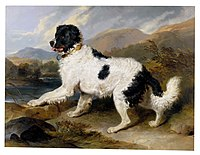
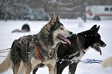
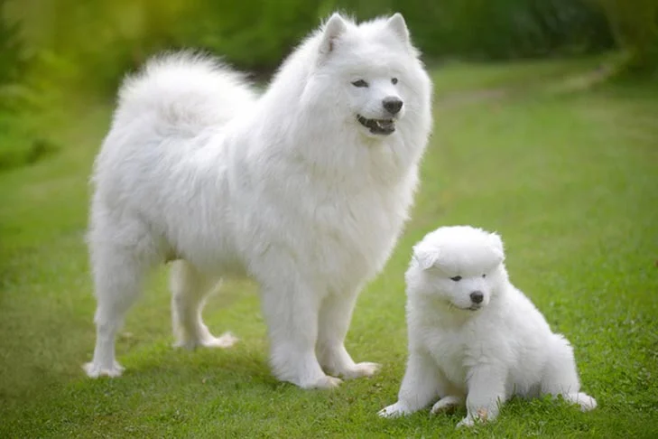
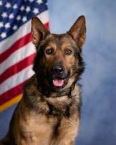
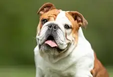

NEWFOUNDLANDS
Newfoundland is a large breed of working dog. They can be black, grey, brown, or black and white. However, in the Dominion of Newfoundland, before it became part of the confederation of Canada, only black and Landseer coloured dogs were considered to be proper members of the breed.
History
Health
A 2024 UK study found a life expectancy of 11 years for the breed compared to an average of 12.7 for purebreeds and 12 for crossbreeds.
Origin
Genome analysis indicates that Newfoundlands are related to the Irish water spaniel, Labrador Retriever, and Curly-Coated Retriever. The Newfoundland was originally bred and used as a working dog for fishermen in Newfoundland. In the early 1880s, fishermen and explorers from Ireland and England travelled to the Grand Banks of Newfoundland, where they described two main types of working dogs. One was heavily built, large with a longish coat, and the other medium-sized in build – an active, smooth-coated water dog.
Reputation
The breed's working role was varied. Many tales have been told of the courage displayed by Newfoundlands in adventuring and lifesaving exploits. Over the last two centuries, this has inspired a number of artists, who have portrayed the dogs in paint, stone, bronze, and porcelain. One famous Newfoundland was named Seaman, one of the most traveled dogs in human history, who accompanied American explorers Lewis and Clark on their expedition from the Mississippi to the Pacific and back, a journey that took three years. A statue of him is included in many Lewis and Clark monuments. Many children's books have been written about him.
Other famous Husky's:
- Bashaw (Matthew Cotes Wyatt): the Earl of Dudley's favourite dog, and the inspiration for a sculpture by Matthew Cotes Wyatt at the Victoria and Albert Museum in London
- Bilbo: a lifeguard Newfoundland on Sennen beach in Cornwall—credited with saving three lives
- Boatswain: pet of English poet Lord Byron and the subject of his poem "Epitaph to a Dog". Byron attempted to nurse Boatswain back to health when the dog contracted rabies, but was unsuccessful. When Boatswain died, Byron constructed a monument for him at Newstead Abbey.
- Bouncer: presented by the children of Newfoundland, with a dog-cart,[33] as a gift to the Duke and Duchess of Cornwall and York (later George V and Queen Mary), during their visit to the colony in 1901
HUSKY'S
Husky is a general term for a dog used in the polar regions, primarily and specifically for work as sled dogs. It refers to a traditional northern type, notable for its cold-weather tolerance and overall hardiness. Modern racing huskies that maintain arctic breed traits (also known as Alaskan huskies) represent an ever-changing crossbreed of the fastest dogs.
History
Health
The husky life expectancy is 12-15 years old. They're a healthy breed for their size — most medium to large dogs live closer to 10-12 years.
Origin
The Siberian Husky was originally developed by the Chukchi people of the Chukchi Peninsula in eastern Siberia.[9] They were brought to Nome, Alaska in 1908 to serve as working sled dogs, and were eventually developed and used for sled dog racing.
Reputation
While Huskies aren't known for being big barkers, they do have a reputation for howling and singing to their owners whenever the mood takes them. They're not the best pets if you have thin walls and close neighbours.
Other famous Husky's:
- Siberian Husky: This is the “original Husky”. Siberian Huskies were once bred to be sled dogs. They have phenomenal endurance and are true athletes. While Huskies are mostly known for performing in sled races, they actually worked for the US Army’s Arctic Search and Rescue Unit during World War II as well!
- Alaskan Malamute: The Alaskan Malamute is the big cousin of the Siberian Husky. While looking very similar, these dogs are a lot larger. Males can reach up to 95 pounds in size and stand as tall as 26 inches. Alaskan Malamutes are one of the oldest sled dog breeds. They descended directly from wolves and were creates as long as 2000-3000 years ago.
- Agouti Husky: The Agouti Husky is essentially the opposite of the White Husky – exceptionally dark-colored. These dogs have a wolf-like appearance. This coloring is rare in show lines and mostly found in racing sled dog lines.
- MacKenzie River Husky: The confusing origins of the MacKenzie River Husky have produced conflicting opinions about whether it’s a type or a breed. While not currently recognized by the AKC, the MacKenzie is distinct from the Siberian Husky in both build and coat.
SAMOYED
Samoyed may look like a white Husky, but he is a different breed altogether. These medium-sized dogs are about 21 inches tall and weight 34-55 pounds.
History
Health
A 2024 UK study found a life expectancy of 13.1 years for the breed compared to an average of 12.7 for purebreeds and 12 for crossbreeds.
Origin
The progenitor of the Samoyeds was the Nenets Herding Laika, a reindeer herding spitz commonly used throughout northern Siberia, especially the Nenets people who were pejoratively referred to as Samoyeds at that time.DNA evidence confirms that Samoyeds are a basal breed that predates the emergence of the modern breeds in the 19th century.
Reputation
The dog, nicknamed "Sammy", is very easy going and friendly, with a playful personality that charms family and strangers alike. The Samoyed has a fascinating history and a reputation for being a family favorite.
Other famous Samoyed:
- Perhaps the most famous Samoyed ever in America was Rex of White Way (1946-57)..
K-9
K-9 also known as a police dog, is a dog that is trained to assist police and other law enforcement officers. Their duties may include searching for drugs and explosives, locating missing people, finding crime scene evidence, protecting officers and other people, and attacking suspects who flee from officers.
History
Health
It depends on the physical demands of the dog: for apprehension dogs, most (but not all) finish their tour of duty between 7 to 9 years old. If the dog is search only (drugs, explosives, etc) they can work longer (9 to 12 years old).
Origin
The term 'K9' or 'K-9' is derived from the English and French word 'CANINE' (which simply means 'DOG'). 'CA'='K' and 'NINE'='9' (same as 'YOU TOO'='U2'). The first use of 'K-9' goes probably back to 1942. In that year the first military K-9 Corps were created by US Secretary of War Robert P.
Reputation
Beyond their physical capabilities, protection dogs exhibit a profound level of emotional intelligence. They can read human emotions, detect subtle cues, and respond empathetically to the needs of their owners.
Other famous K-9:
- Boxer
- Bloodhound
- American Pit Bull Terrier
- Doberman Pinscher
BULLDOG
BULLDOG is a British breed of dog of mastiff type. It may also be known as the English Bulldog or British Bulldog. It is a medium-sized, muscular dog of around 40–55 lb (18–25 kg). They have large heads with thick folds of skin around the face and shoulders and a relatively flat face with a protruding lower jaw.
History
Health
The breed has significant health issues as a consequence of breeding for its distinctive appearance, including brachycephaly, hip dysplasia, heat sensitivity, and skin infections. Due to concerns about their quality of life, breeding Bulldogs is illegal in Norway and the Netherlands.
Origin
A 2022 study in the UK of veterinary data found a life expectancy of 7.39 years, the second lowest of all breeds in the study. A 2024 UK study found a life expectancy of 9.8 years for the breed compared to an average of 12.7 for purebreeds and 12 for crossbreeds.
Reputation
According to the American Kennel Club (AKC), a Bulldog's disposition should be "equable and kind, resolute, and courageous (not vicious or aggressive), and demeanour should be pacifist and dignified. These attributes should be countenanced by the expression and behaviour".
Other famous Bulldog:
- Spike. The mascot of Gonzaga University
- Butch. Mascot of the Royal Air Force during World War II.
- Uga. The live mascot for the University of Georgia Bulldogs football team.
- Chesty. The official mascot of the Marine Corps.